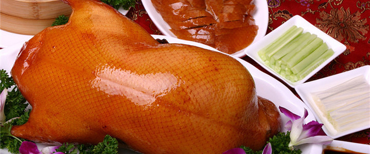
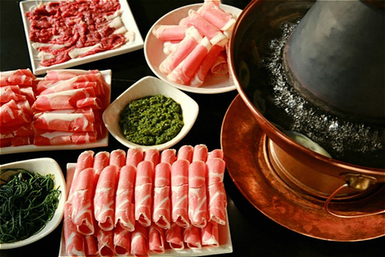
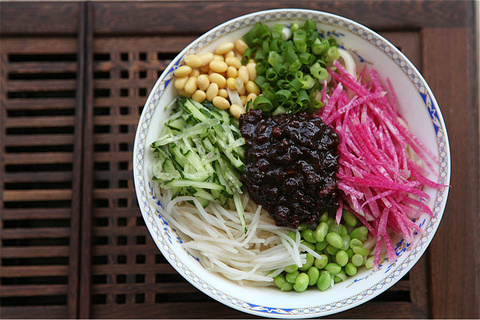
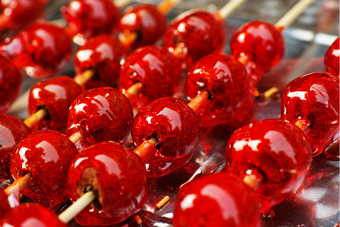
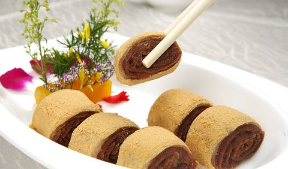

烤鸭

北京烤鸭起源明代金陵烤鸭，可追溯至南北朝时期。原料需用“填鸭”，主要有焖炉和挂炉两种烤制方式，除了传统的配鸭酱与荷叶饼，现代还发展出了“鸭皮蘸白糖”等八大吃法。
涮羊肉

传说忽必烈在战场上突遇敌军来袭，厨师急中生智将羊肉切成薄片烫熟，后演变成了涮羊肉。正宗老北京涮羊肉用的是炭火铜锅、手切鲜羊肉再配上二八酱、韭菜花调成的小料。
炸酱面

炸酱面是北京人从小离不开的面食。用肉丁、葱姜、黄酱或甜面酱做成炸酱，将面条煮熟后拌上炸酱，再放入黄瓜丝、豆芽、青豆、黄豆等做成的菜码食用，口味咸鲜。
冰糖葫芦

冰糖葫芦，是许多老北京记忆中美好的童年回忆之一，如今更是北京当地最喜闻乐见的小吃之一。都说“信远斋”、“九龙斋”、“不老泉”这三个老字号的好吃，其实冰糖葫芦已经在街头巷尾都十分流行了，不论是各大超市卖场，还是流动摊位，都能看到用料各式各样的冰糖葫芦：纯山楂，葡萄，有草莓，猕猴桃片、芒果片，有山药等多种口味……为了现代人的口味而衍生出多种类型，这些口味得以诞生。经典的山楂制成的冰糖葫芦，用山楂串成，蘸上麦芽糖稀，自然风干冻硬成型，吃起来酸甜可口，还有冰凉的感觉。很多人喜欢吃老北京冰糖葫芦，一是它开胃健脾，二是因为冰糖葫芦代表了浓厚的京味儿。
驴打滚

是老北京小吃十三绝中最出名的。因其外层撒上的黄豆面如驴在打滚时扬起的黄土而得名。将黄米面蒸熟后抹上豆沙或红糖，均匀卷起后在表层撒上白糖和黄豆面，入口绵软香甜。